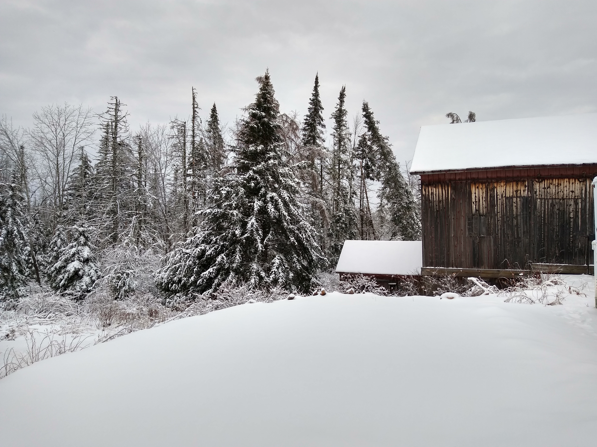
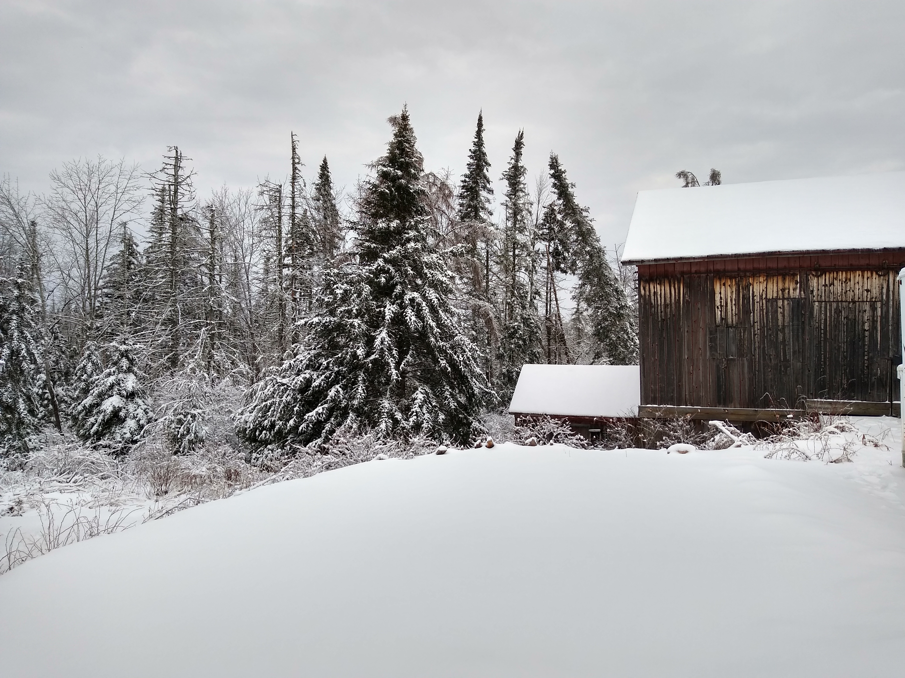

Please view using the following browser versions (or higher): Chrome 58, Safari 10.1, Edge 16, Firefox 54.
Originally trained as a chemist/biochemist, I worked in pharmaceutical Drug Development, Quality and Regulatory Affairs for many years until
laid off after a corporate buyout. I then embarked on a new path as the founder/owner of an ostrich ranch with two nightly rental guest houses.
I currently code as a freelancer, focusing on lightweight, fast designs using a minimal number of dependencies. I am also founder and manager of
Hoffmeister Emporium, a variety shop selling new and used items, antiques, books, furniture, hardware and housewares.
This site is made entirely using pure Javascript and CSS
 
